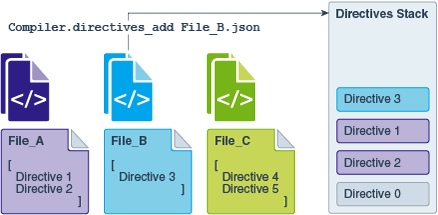
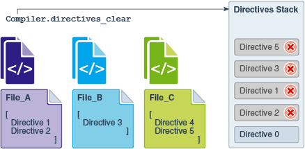

Commands for Working with Directive Files
This topic examines commands and the effects of working with completed directive files.
Compiler Directives and the Command Line
You can use the command-line interface to add and print compiler directives while starting a program.
You can specify only one directives file at the command line. All directives within that file are added to the directives stack and are immediately active when the program starts. Adding directives at the command line enables you to test the performance effects of directives during a program’s early stages. You can also focus on debugging and developing your program.
Adding Directives Through the Command Line
XX:CompilerDirectivesFile=fileTestProgram:java -XX:+UnlockDiagnosticVMOptions -XX:CompilerDirectivesFile=File_A.json TestProgram-
-XX:+UnlockDiagnosticVMOptionsenables diagnostic options. You must enter this before you add directives at the command line. -
-XX:CompilerDirectivesFileis a type of diagnostic option. You can use it to specify one directives file to add to the directives stack. -
File_A.jsonis a directives file. The file can contain multiple directives, all of which are added to the stack of active directives when the program starts. -
If
File_A.jsoncontains syntax errors or malformed directives, then an error message is displayed andTestProgramdoes not start.
Printing Directives Through the Command Line
-XX:+CompilerDirectivesPrintjava -XX:+UnlockDiagnosticVMOptions -XX:+CompilerDirectivesPrint -XX:CompilerDirectivesFile=File_A.json TestProgram Compiler Directives and Diagnostic Commands
You can use diagnostic commands to manage which directives are active at runtime. You can add or remove directives without restarting a running program.
Crafting a single perfect directives file might take some iteration and experimentation. Diagnostic commands provide powerful mechanisms for testing different configurations of directives in the directives stack. Diagnostic commands let you add or remove directives without restarting a running program’s JVM.
Getting Your Java Process Identification Number
To test directives you must find the processor identifier (PID) number of your running program.
- Open a terminal.
- Enter the jcmd command.
jcmd command returns a list of the Java process that are running, along with their PID numbers. In the following example, the information returned about TestProgram :11084 TestProgramAdding Directives Through Diagnostic Commands
You can add all directives in a file to the directives stack through the following diagnostic command.
jcmd pid Compiler.directives_add filejcmd 11084 Compiler.directives_add File_B.jsonRemoving Directives Through Diagnostic Commands
You can remove directives by using diagnostic commands.
jcmd pid Compiler.directives_removejcmd pid Compiler.directives_clearPrinting Directives Through Diagnostic Commands
You can use diagnostic commands to print the directives stack of a running program.
jcmd pid Compiler.directives_printHow Directives Are Ordered in the Directives Stack?
The order of the directives in a directives file, and in the directives is very important. The top-most, best-matching directive in the stack receives priority and is applied to code compilation.
The following examples illustrate the order of directive files in an example directives stack. The directive files in the examples contain the following directives :
-
File_AcontainsDirective 1andDirective 2. -
File_BcontainsDirective 3. -
File_CcontainsDirective 4andDirective 5.
Starting an Application With or Without Directives
TestProgram without specifying the directive files.
-
To start
TestProgramwithout adding any directives, at the command line, enter the following command:java TestProgram -
TestProgramstarts without any directives file specified. -
The default directive is always the bottom-most directive in the directives stack. Figure 2-1 shows the default directive as
Directive 0. When you don’t specify a directives file, the default directive is also the top-most directive and it receives priority.
Figure 2-1 Starting a Program Without Directives

Description of "Figure 2-1 Starting a Program Without Directives"
-
To start the
TestProgramapplication and add the directives fromFile_A.jsonto the directives stack, at the command line, enter the following command:java -XX:+UnlockDiagnosticVMOptions -XX:CompilerDirectivesFile=File_A.json TestProgram -
TestProgramstarts and the directives inFile_Aare added to the stack. The top-most directive in the directives file becomes the top-most directive in the directives stack. -
Figure 2-2 shows that the order of directives in the stack, from top to bottom, becomes is [1, 2, 0].
Figure 2-2 Starting a Program with Directives

Description of "Figure 2-2 Starting a Program with Directives"
Adding Directives to a Running Application
-
To to add all directives from
File_Bto the directives stack, enter the following command:jcmd 11084 Compiler.directives_add File_B.jsonThe directive in
File_Bis added to the top of the stack. -
Figure 2-3 shows that the order of directives in the stack becomes is [3, 1, 2, 0].
Figure 2-3 Adding a Directive to a Running Program
Description of "Figure 2-3 Adding a Directive to a Running Program"
TestProgram while it is running:
-
To add all directives from
File_Cto the directives stack, enter the following command.jcmd 11084 Compiler.directives_add File_C.json -
Figure 2-4 shows that the order of directives in the stack becomes is [4, 5, 3, 1, 2, 0].
Figure 2-4 Adding multiple Directives to a Running Program

Description of "Figure 2-4 Adding multiple Directives to a Running Program"
Removing Directives from the Directives Stack
-
To remove
Directive 4from the stack, enter the following command:jcmd 11084 Compiler.directives_remove -
To remove more, repeat this diagnostic command until only the default directive remains. You can’t remove the default directive.
-
Figure 2-5 shows that the order of directives in the stack becomes is [5, 3, 1, 2, 0].
Figure 2-5 Removing One Directive from the Stack

Description of "Figure 2-5 Removing One Directive from the Stack"
-
To clear the directives stack, enter the following command:
jcmd 11084 Compiler.directives_clear -
All directives are removed except the default directive. You can’t remove the default directive.
-
Figure 2-6 shows that only
Directive 0remains in the stack.
Figure 2-6 Removing All Directives from the Stack
Description of "Figure 2-6 Removing All Directives from the Stack"